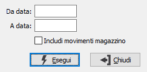

Stampa registro lotti
Il programma consente di effettuare la stampa di un registro che, per ogni lotto movimentato, riporta il riferimento al movimento, la quantità ed il tipo di movimento (carico o scarico). La procedura analizza i documenti di carico e scarico (Ddt e fatture).

DA DATA: indicare la data del documento da cui deve iniziare la stampa. Confermando a vuoto, la stampa inizia con il primo documento valido.
A DATA: indicare la data con del documento cui si desidera terminare la stampa. Confermando a vuoto, la stampa si conclude con l'ultimo documento valido.
INCLUDI MOVIMENTI MAGAZZINO: Se spuntato include anche tutti i movimenti di magazzino di carico/scarico che non derivano da documenti o da trasferimenti.